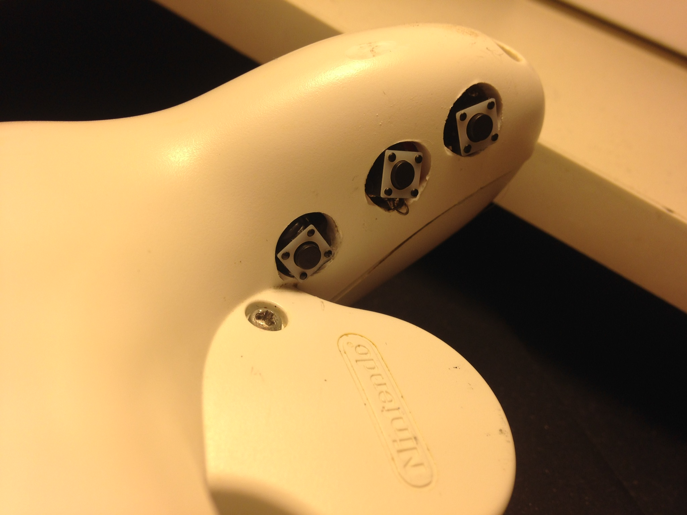

projects
Table of Contents
- Projects
- Input Latency Detection in Expert-Level Gamers
- Making Sense of Melee: The Illusion of Objective Ranks and the Real Impact of Everything
- Locating Visual Jokes in Homestuck with Rudimentary Computer Vision
- GameCube Controllers in the Era of SmashBox
- Optimizing Health with Cronometer
- SSBM Bracket Projection Algorithm
- Zen in the Art of Ping Pong The Animation
- Do Pot Bonuses Affect Entrant Numbers at Melee Tournaments?
- Violin Plots for KayBeats' "West Coast Bias in SSBMRank, and Why it Doesn't Exist"
Projects
Updated: 4/3/2018
The bulk of the content on this website contains what I consider to be larger projects of mine, scattered around a number of different topics. It's difficult to organize them well based on a simple list, so I'll periodically update this as a rough list as I accrue more and more projects to add to it.
Most of my projects are in some way adjacent to the Super Smash Brothers Melee community, since involving myself there is what I spend most of my free time on. Aside from finding the game itself super fun, I've found the community to be a great source of inspiration for interesting problems to solve.
Input Latency Detection in Expert-Level Gamers
My Cognitive Science Senior Thesis at Yale University was a visuomotor perception experiment in which I exposed tournament-level SSBM players (including some top-100 world-ranked players) to precisely timed flashes of light using an arduino microcontroller in order to test their ability to blindly determine the presence of input lag compared to a control group. SSBM tournament matches are all held on CRT Televisions, since even the fastest LCD monitors necessarily add delay in between your input and the picture being displayed, effectively slowing down your reaction time. This has led to certain players to claim they could notice input lag, even at single-digit-millisecond levels. This experiment found a large and significant difference in perceptual ability between tournament-level gamers and a control group, and suggested the existence of such a perceptual effect to be somewhat plausible.
Making Sense of Melee: The Illusion of Objective Ranks and the Real Impact of Everything

Aside from academic work, I've also done some statistics and data visualization work within the Melee Community. The most prominent of these is Making Sense of Melee - a longform statistics writeup in which I explore a variety of topics, including flaws in popular ranking algorithms, the accuracy of seeding at national tournaments (a topic I was interviewed by ESPN esports about in 2017), and probabilities to win against players at differing skill levels. The post received more than 50,000 hits, reaching #6 on Hacker News.
Locating Visual Jokes in Homestuck with Rudimentary Computer Vision

I try to cluster together visually similar panels in Andrew Hussie's webcomic Homestuck using relatively basic Computer Vision techniques. Project explores Hamming Distance, Edge Detection, Perceptual Hashing, K-Means Clustering, Graph Theory, Community Detection, etc. I end up finding a bunch of panels that are redraws of each other. A bit long-winded, since it has my entire problem solving process (failures included) but a pretty cool project of mine.
GameCube Controllers in the Era of SmashBox

In which I wired tact switches to precise analog values on a GameCube controller to emulate SmashBox functionality without sacrificing analog control or previously built muscle memory. The video I made for this project proved extremely controversial, amassing 10,000 views on YouTube and over 200 comments on Reddit.
Optimizing Health with Cronometer
Chronicles my 40-lb weight loss near the end of my undergraduate life. To accomplish this goal (which took only a few months), I read a number of papers in nutritional science, synthesized a game plan, and measured every single piece of food I ate for several months to assess the validity of my approach. I tracked my food intake using Cronometer and adhered to a calorie counting regime for a short while, and at the end made some charts based upon my weight over time and the foods I ate. In the end I lost weight at a constant rate, with the linear regression's R-squared resulting a staggering 0.98, despite not adhering to any specific macronutrient balance.
SSBM Bracket Projection Algorithm

2015 project in which I use past data to write a simple machine learning classifier to predict wins and losses at SSBM tournaments, and outperform basic seed1 > seed2 projections done by smash.gg.
Zen in the Art of Ping Pong The Animation

I analyze Zen themes in the storylines of cult classic sports anime Ping Pong The Animation. If you're more about my empirical projects, this might not be quite up your alley. However, if you've seen the show I'm confident this essay will shed some interesting perspective on it, and if you haven't seen the show then I'm confident you're missing out on one of the best pieces of media ever made.
Do Pot Bonuses Affect Entrant Numbers at Melee Tournaments?

Short writeup on pot bonuses at major tournaments, and their effect on attendance. I use attendance and prize pool data from 60 large tournaments between 2015-2017 and use a number of correlational tests and visualizations in R, ultimately finding no relationship between pot size and major tournament attendance.
Violin Plots for KayBeats' "West Coast Bias in SSBMRank, and Why it Doesn't Exist"

KayB is a Melee Stats denizen, and he wrote a post exploring the supposed "West Coast Bias" in the SSBMRank panel. I collaborated with him by generating Violin Plots (boxplots with kernel density plots overlayed on top of them) of the top 100 ballots, graciously provided by Tafokints.
Some smaller projects and writings of mine are scattered around this website, since I use this website as a sort of journal / garage / desk-with-papers-scattered-all-over it. You can find more about me over at the About page, you can find my Resume Here, and you can keep up with what I'm up to over at the Links page.
And, as always, more to come soon!